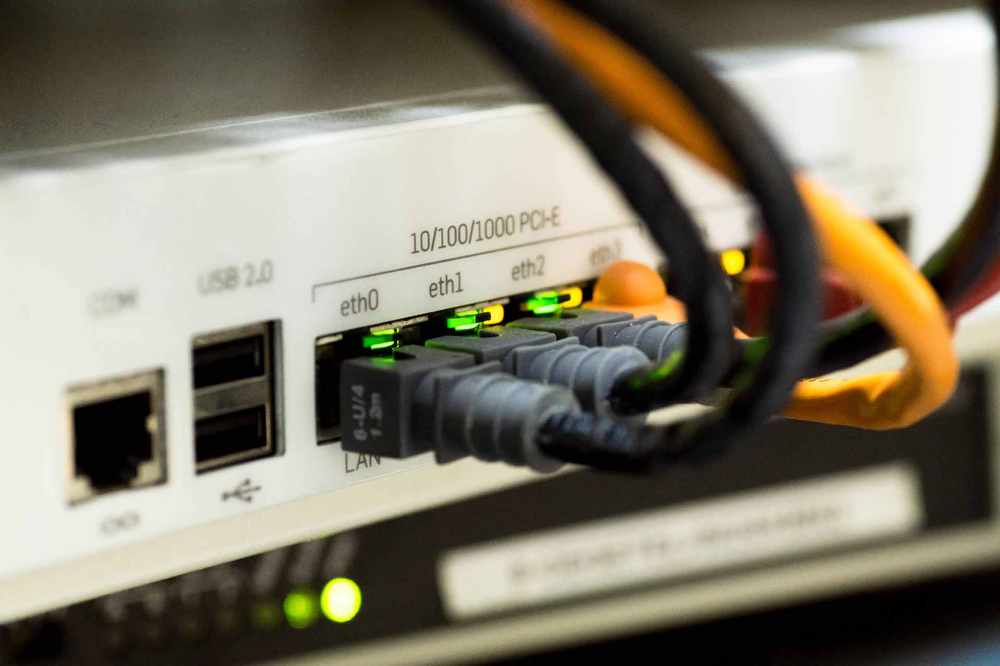

“Computer networks are integral to everything. From home life to big industry companies, all around the world with various computer systems, we rely on networks, making this an exciting and important industry to study and work in. The current climate needs reliable, interactive computer networks and you will learn all about the influences that computer technology has on the world while finding your place in the industry.” .
The networking pathway and why chose it. The networking kind of fascinated me from the time I started understanding how computers work, then later in life I decided to deepen my knowledge on computers and try to make my choice what I want to do in life, so I went to vocational school computing pathway. While there I’ve been to some lot co-curricular activities which made my choice quite clear. I decided to go for networking as that was that seemed most interesting to me. So, I applied for Northampton university Computer network engineer pathway